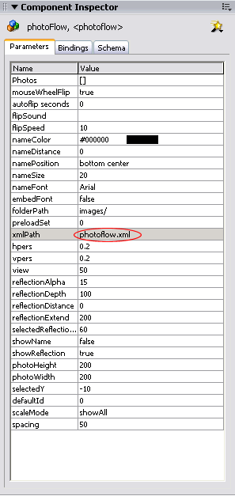

We recommend using the photoFlow with an external XML file as this will allow for greater flexibility and updating options. By defining the images in an external XML file, you can publish the SWF file once and add or change the images whenever you wish. This option can be used instead of adding the images through the Component Inspector or through ActionScript.
1. Open your Flash file in which you are using the photoFlow component, or create a new Flash file and drag the photoFlow component onto the stage. If you are creating a new Flash file, ensure that you save it now.
2. Open your favourite plain text editor (for example Notepad on Windows or TextEdit on Mac) and start a new file.
3. Begin your file with the following line:
<?xml version="1.0" encoding="utf-8"?>
This is the standard xml declaration.
4. Add the following lines to your xml file. (The bold lines are the new additions)
<?xml version="1.0" encoding="utf-8"?>
<photos path="images/">
</photos>
The photos line opens the photos node and defines the path to the images folder. Note: The images folder must end with a forward slash "/". The images will now be defined within the photos element.
5. Make the following addition to your file to add an image. (The addition is highlighted in bold.)
<?xml version="1.0" encoding="utf-8"?>
<photos path="images/">
<photo name="photo1" url="photo1.jpg">This is photo1</photo>
</photos>
The name element defines a name for this image
The url element defines the path and image filename.
The text enclosed by the photo tags is the description text for the image.
6. The highlighted line below shows how to add an image that is in the library, using its linkage identifier.
<?xml version="1.0" encoding="utf-8"?>
<photos path="images/">
<photo name="photo1" url="photo1.jpg">This is photo1</photo>
<photo name="mc1" linkageId="mc_pic">This is mc1.</photo>
</photos>
7.
Repeat these steps until you have added all of the photos that you wish. Your complete XML file should look something like this:
<?xml version="1.0" encoding="utf-8"?>
<photos path="images/">
<photo name="photo1" url="photo1.jpg">This is photo1</photo>
<photo name="mc1" linkageId="mc_pic">This is mc1.</photo> <photo name="photo2" url="photo2.jpg">This is photo2</photo> <photo name="photo3" url="photo3.jpg">This is photo3</photo>
</photos>
8. You may wish to define additional variables in the photo node's attributes which can be used together with ActionScript events to provide more information on each image. For example, this could be used to add an author name and a link to the image.
<photo name="photo1" url="photo1.jpg" author="john" link="5">This is photo1</photo>
For instructions on using these values with ActionScript events, please see the events section.
9.
Save the XML file to the same folder as your Flash file. In this example, we have given the XML file the name: photoflow.xml
10. Return to your Flash file and enter the name and path to the XML file that you just created in the xmlPath parameter of the photoFlow that's on the stage.
Note: If your .swf file will be in a different folder to the HTML file in which it is embedded, you should enter the path to the XML file, relative to the location of the .swf file.

11. Press Ctrl+Enter (Win) or Cmnd+Enter (Mac) to test your movie.